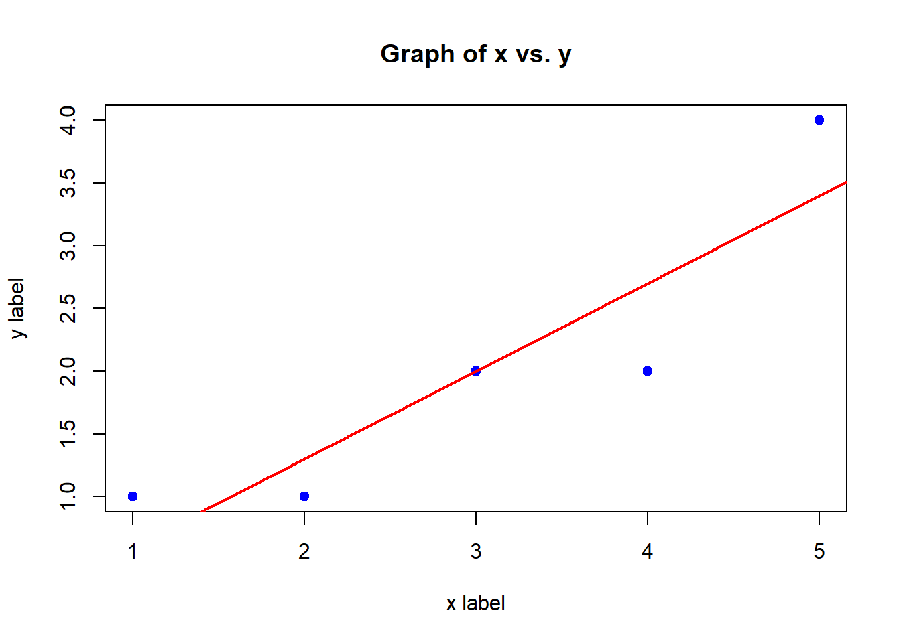

x <- c(1, 2, 3, 4, 5)
y <- c(1, 1, 2, 2, 4)
n <- length(x) #x and y have the same length so it will work either wayBasics
Defining vectors
x values: 1 2 3 4 5y values: 1 1 2 2 4n(sample size): 5Sums
sum_x <- sum(x)
sum_y <- sum(y)
sum_x2 <- sum(x^2)
sum_y2 <- sum(y^2)
sum_xy <- sum(x*y) #same as sum of y*xsum of x-values: 15sum of y-values: 10sum of x-values squared: 55sum of y-values squared: 26sum of x-values times y-values: 37Means
x_bar <- mean(x)
y_bar <- mean(y)x̄ : 3ȳ : 2SS formulars
SS_yy = sum_y2 - n * (y_bar)^2
SS_xx = sum_x2 - n * (x_bar)^2
SS_xy = sum_xy - n * x_bar * y_barSSxx : 10SSyy: 6SSxy: 7Slope and Intercept of the least squares model
b1_hat <- SS_xy / SS_xx
b0_hat <- y_bar - b1_hat * x_barb1 hat : 0.7b0 hat: -0.1Scatter Plot
plot(
x, y,
main = "Graph of x vs. y",
xlab = "x label",
ylab = "y label",
pch = 19,
col = "blue"
)
abline(
a = b0_hat,
b = b1_hat,
col = "red",
lwd = 2
)
Residual Analyses and Standard errors
Predicted values
y_hat <- b0_hat + b1_hat * xy hat : 0.6 1.3 2 2.7 3.4Residuals
residuals <- y - y_hat
SSE <- sum(residuals^2)Residuals : 0.4 -0.3 0 -0.7 0.6SSE: 1.1Mean Squared Error
k <- 2 #for the degrees of freedom
MSE <- SSE / (n-k)MSE : 0.3666667Test statistic
# Standard error of b1_hat
SE_b1 <- sqrt(MSE / SS_xx)
t <- (b1_hat - 0) / SE_b1SE b1 : 0.1914854t: 3.655631Correlation Coefficient
r <- SS_xy / sqrt(SS_xx * SS_yy)r: 0.9036961Correlation of Determination
r_squared <- r^2
# using textbook formula
r_sq <- 1 - (SSE / SS_yy)r squared : 0.8166667r squared(using textbook formula) : 0.8166667Built in least squares method
sample_model <- lm(y ~ x)
print(summary(sample_model))
Call:
lm(formula = y ~ x)
Residuals:
1 2 3 4 5
4.000e-01 -3.000e-01 -5.551e-17 -7.000e-01 6.000e-01
Coefficients:
Estimate Std. Error t value Pr(>|t|)
(Intercept) -0.1000 0.6351 -0.157 0.8849
x 0.7000 0.1915 3.656 0.0354 *
---
Signif. codes: 0 '***' 0.001 '**' 0.01 '*' 0.05 '.' 0.1 ' ' 1
Residual standard error: 0.6055 on 3 degrees of freedom
Multiple R-squared: 0.8167, Adjusted R-squared: 0.7556
F-statistic: 13.36 on 1 and 3 DF, p-value: 0.03535